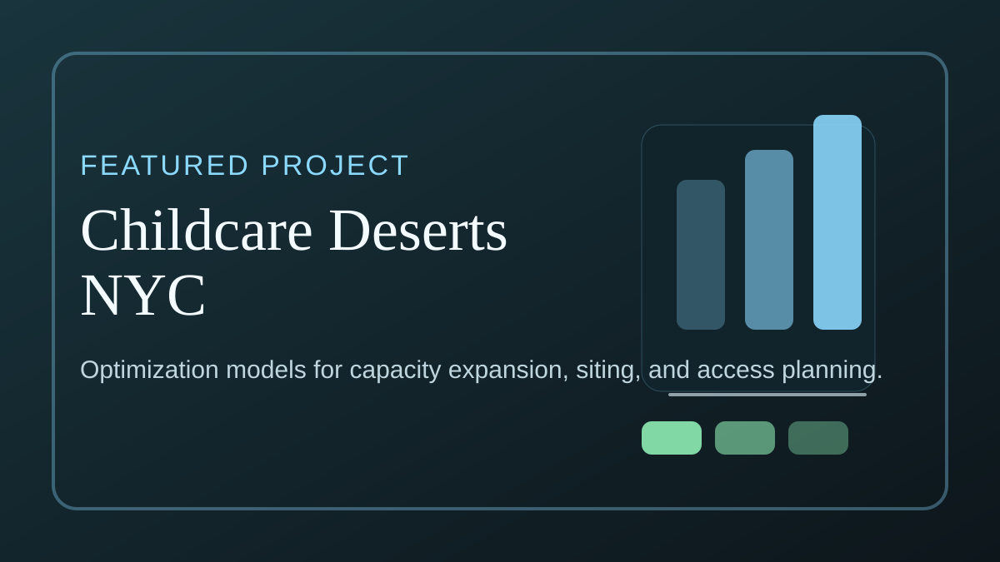

New York, NY
Alexandre SEPULVEDA de DIETRICH
Seeking Summer 2026 Data Science, AI Engineering, and ML internships in NYC
I build practical data and AI systems: anomaly detection for finance teams, optimization models for public-policy problems, and product-grade ML tools with modern web stacks.
- Built an accounting data quality and anomaly detection pipeline at CHANEL Europe.
- Shipped an end-to-end AI decision-support MVP with FastAPI, Next.js, and voice workflows.
About
I build practical data and AI systems: anomaly detection for finance teams, optimization models for public-policy problems, and product-grade ML tools with modern web stacks.
What I Do
Applied machine learning, optimization, healthcare operations research, and AI product systems.
How I Work
Build the model, package the workflow, and document tradeoffs so collaborators can actually use the result.
Projects
Evidence-first project highlights with artifacts and direct case-study access.
Featured Projects

Childcare Deserts NYC
Optimization project for reducing NYC childcare deserts by combining facility expansions with new-site planning under cost and spacing constraints.
Result: Built a seven-stage notebook pipeline with ideal and realistic planning scenarios and exported report-ready tables and figures.
Other Projects
HelpfulLens
Yelp review helpfulness modeling pipeline with sentiment-enriched features, reproducible data prep, and exploratory analysis helpers.
Codebase Analyzer
WIP developer tool that ingests a repository and produces architecture diagrams, structure reports, onboarding explanations, and starter tasks.
CUIMC Appointment Scheduling Research
Research project with Columbia University Irving Medical Center under Prof. Carri Chan on delay-sensitive appointment scheduling, cancellations, no-shows, and policy tradeoffs.
LinkedIn Note Copilot
Chrome extension plus FastAPI backend for generating personalized LinkedIn connection notes from the current profile page.
Zeit
Intelligent scheduling assistant skeleton built around FastAPI, SQLAlchemy, and OR-Tools for task, event, and time-block planning.
DNA Plasmid Closure with Genetic Algorithms
Evolutionary computation project that learns dinucleotide rotation parameters so 3D DNA trajectories close into plasmid loops.
Case Studies
Two dedicated deep dives with context, approach, constraints, and next steps.
Experience
Recent roles and research engagements.
Data Scientist Intern, Advanced Analytics and Data Science · CHANEL Europe
- Built an accounting data quality and anomaly detection pipeline.
- Developed mixed data detection workflows and experiment tracking.
- Collaborated with finance stakeholders on deployment needs.
Data Analyst Intern, Commercial Excellence Europe · SIGMA Group
- Analyzed reseller performance across multiple markets.
- Created dashboards for negotiation teams with standardized KPIs.
- Enabled consistent reporting for account strategy planning.
Research Project, Multi-Sensor Localization · CentraleSupélec L2S Lab and Forvia
- Built a multi-sensor localization pipeline combining camera priors and array-based measurements.
- Validated localization behavior in a controlled test area.
- Shared findings with academic and industry partners.
Education
Academic focus in analytics, machine learning, and engineering.
MS in Business Analytics · Columbia University
- GPA: 3.93/4.00
- Coursework: AI Engineering, Marketing Analytics, Business Analytics, Data Analytics, Probability Statistics and Simulation
Diplome d'Ingenieur (MEng) in Mathematics and Data Science · Universite Paris-Saclay: CentraleSupélec
- GPA: 3.93/4.00
- Coursework: Algorithms and Networks, Machine Learning, HPC and Cloud Computing, Signal Processing, Game Theory
Intensive Preparatory Course in Physics and Engineering · Lycee Charlemagne and Lycee Saint-Louis
- Ranked top 2 percent of national competitive entrance exams
- Two to three year intensive program preparing for France's top engineering schools
Skills
Tools and strengths grouped by focus.
Data Science
- Python
- Pandas
- NumPy
- scikit-learn
- PyTorch
- Statistical Modeling
Analytics and BI
- SQL
- Power Query
- Power Pivot
- Excel Dashboards
- Statistics
Optimization and Research
- Gurobi
- Simulation
- Experimental Design
- Signal Processing
AI and Product Engineering
- FastAPI
- Next.js
- TypeScript
- REST APIs
- Git
Languages
- French (Native)
- English (Professional)
- Spanish (Proficient)
Contact
Reach out for internships, research collaborations, or analytics projects.
Location: New York, NY